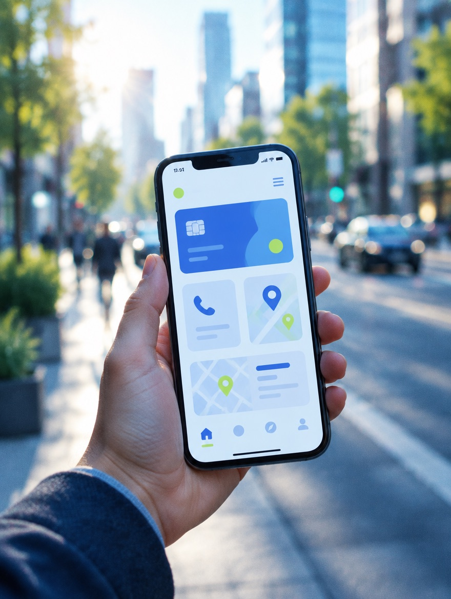
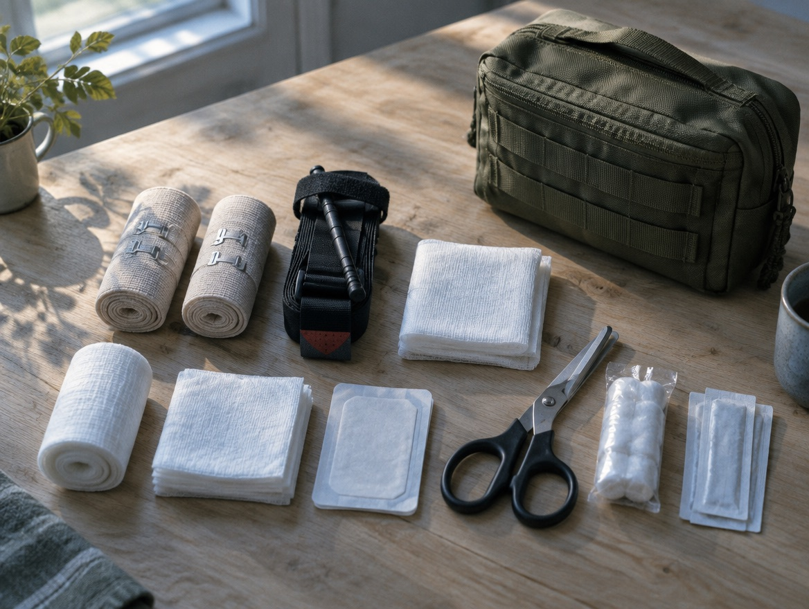

01
Працівник
Знає, як скористатися полісом і до кого звернутися по підтримку.
Допомагаємо бізнесу обрати програму добровільного медичного страхування та зробити її зрозумілою для працівників. Від першого порівняння пропозицій до щоденної підтримки — ми на вашій стороні.
Знає, як скористатися полісом і до кого звернутися по підтримку.

Тримає процес під контролем, не витрачаючи на нього дні: зміни у програмі, складні звернення й звітність ведемо ми, за HR лишається рішення.

Тримає витрати під контролем: ціна перевірена тендером, вибір страхової прозорий, а супровід веде цілий відділ фахівців на аутсорсі — на чолі з вашим HR.
Застрахована людина може переглянути покриття, ліміти та винятки, знайти контакти асистансу й звернутися по підтримку без пошуку в документах і чатах.
Детальніше про застосунок ↗

З’ясовуємо, де працюють ваші люди, які клініки їм зручні, що важливо у покритті та які витрати компанія планує на страхування.
Якщо ДМС вже є, аналізуємо чинні умови, доступну статистику звернень і виплат та зворотний зв’язок працівників. Якщо запускаєте програму вперше — допомагаємо сформувати вимоги.

Перетворюємо різні пропозиції страхових компаній на зрозумілий вибір. Пояснюємо, що ви отримуєте за запропонований бюджет і де є обмеження.
Узгоджуємо покриття, категорії застрахованих, географію та бюджет. Готуємо єдине завдання для учасників тендеру.
Обговорюємо пропозиції з фіналістами, уточнюємо спірні умови та готуємо рекомендацію. Остаточне рішення залишається за вами.
Супроводжуємо узгодження договору та списків застрахованих. Пояснюємо працівникам можливості програми, контакти й порядок дій.
Достатньо часу, щоб залучити ринок, зіставити умови та спокійно узгодити рішення всередині компанії.
Можливий, коли звужуємо коло учасників до приблизно п’яти страхових компаній і швидко отримуємо потрібні дані від вас.
Конкретне покриття, доступні клініки, ліміти та порядок отримання допомоги визначаються обраною програмою і договором страхування.
Наші фахівці допомагають розібратися в медичних документах, умовах покриття та відповіді страхової компанії. Беруть участь у комунікації зі страховою компанією й асистансом.
Директор напряму ДМС та фахівці команди мають медичну освіту.
Наша роль — страховий супровід і представництво ваших інтересів. Діагностику та лікування здійснюють медичні заклади.
Допомогу не погодили, виникло запитання щодо покриття або затягнувся розгляд документів? Допомагаємо з’ясувати причину та пройти наступні кроки.
Вивчаємо звернення, умови програми, наявні документи та пояснення страхової компанії.
Уточнюємо, яких документів бракує, допомагаємо сформулювати запит або аргументовану скаргу.
Просимо пояснити підстави рішення та, коли є аргументи, ініціюємо повторний розгляд.
Стежимо за розглядом звернення, пояснюємо відповідь і подальші дії. За погодженого відшкодування супроводжуємо питання виплати.
Відстоюємо ваші інтереси на підставі умов договору. Рішення про покриття чи виплату ухвалює страхова компанія.
Перед пролонгацією дивимося, як програмою користувалися насправді: що залишити, що розширити, а що переглянути.
Аналізуємо доступну узагальнену статистику витрат, звернень і виплат.
Враховуємо зворотний зв’язок і допомагаємо провести опитування щодо програми.
Пояснюємо можливі зміни покриття, переліку клінік і бюджету перед продовженням договору.
Договір закриває медицину. Але у команди виникають задачі, для яких у страховій програмі рядка немає, — і їх теж хтось має вирішувати.

Умови покриття, ліміти, перелік клінік і порядок звернення — під рукою й без запиту до HR. Плюс чат-бот у месенджері, якщо компанії так зручніше.
Групові й індивідуальні сесії онлайн і офлайн, коуч-сесії, семінари, хелс-коучинг. Підключається окремо від договору.
Пошук клініки, віддалений консиліум, «друга думка», консьєрж-супровід поїздки. Окремо — обслуговування експатів.

Запускаємо й підтримуємо додаткові види страхування, яких корпоративна програма не передбачає.

Будь-який вид страхування з ринку — на умовах, які ми виводимо для ваших людей тендером, поза корпоративним договором. Сюди ж потрапляють нестандартні задачі: організація вакцинації, перелік перевірених лікарів, дні здоров’я.
Так. Почнемо з аналізу чинної програми та питань, які виникають у працівників і HR. Узгодимо, який супровід потрібен зараз і що варто підготувати до наступного тендеру.
Порядок звернення визначає ваша програма; зазвичай допомогу координує асистанс страхової компанії. Ми пояснюємо цей порядок і підключаємося, коли потрібні роз’яснення або підтримка у взаємодії зі страховою компанією.
Достатньо описати команду, міста роботи, бажане покриття та орієнтовний бюджет. Якщо є чинна програма, її умови допоможуть зробити порівняння предметнішим.
Ми беремо на себе підбір умов, супровід програми та роботу зі страховими зверненнями. Ви отримуєте зовнішню команду без витрат на утримання власного відділу. Обсяг співпраці й умови обговорюємо до початку роботи.
Залиште контакти — ми зв’яжемося протягом 24 годин, уточнимо ваш запит і погодимо зручний час робочої зустрічі.